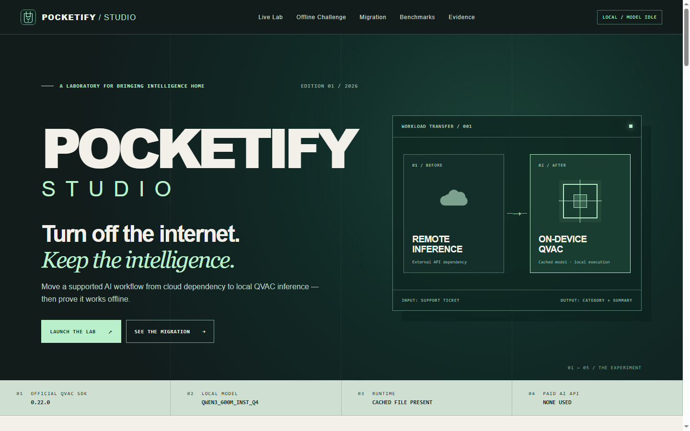
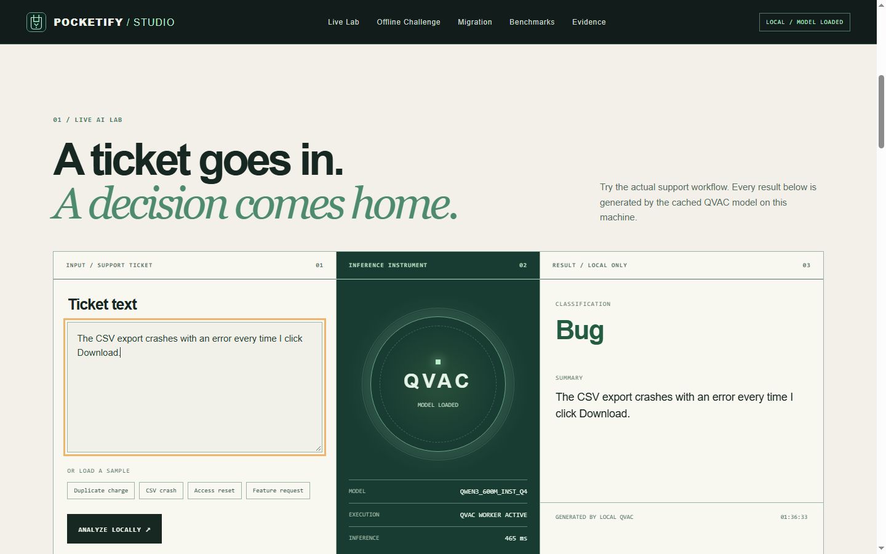

POCKETIFYSTUDIO
Turn off the internet.
Keep the intelligence.
Move a supported AI workflow from cloud dependency to local QVAC inference, then test it with an auditable offline challenge.
INFERENCEExternal API dependency
QVACCached model · local execution
See the experiment.
Then inspect the evidence.
Authentic screen recordings. The challenge shown ends INCONCLUSIVE; physical adapter state was not captured. Public playback is recorded footage, not live QVAC inference.
A ticket goes in.
A decision comes home.
Explore measured QVAC results. New inference is available only when the local Studio confirms its runtime.
Live QVAC requests require the local Studio.
- MODEL
- QWEN3_600M_INST_Q4
- EXECUTION
- AWAITING REQUEST
- INFERENCE
- —
Choose a recorded ticket or run the local Studio to generate a new result.
Pull the plug.
Keep the answer.
A repeatable local verification sequence. The app will never change your network settings for you.
- PREPARE
- WARM UP
- DISCONNECT
- VERIFY
- EXPORT
Disconnect yourself
Wi-Fi: use the Windows network menu to turn Wi-Fi off or disconnect the active network.
Ethernet: unplug the network cable. Keep this localhost page open.
We check DNS, TCP, HTTPS and ICMP from the Node backend before and after a real model inference. One failed request is never treated as proof.
Reconnect manually after the test. No adapter, firewall, driver or registry change is made.
No verdict yet.
A receipt records observations and measurements; it is not cryptographic proof of total network isolation.
One call site.
A different destination.
See the exact supported transformation. Pocketify changes a validated config in a dedicated demo workspace and preserves the original.
Loading source integration…Loading configuration…Inspect preserved cloud backup POCKETIFY.JSON.CLOUD.BACKUP
Backup not created yet. Apply migration in the local Studio.
Exact before / after configuration diff
Apply migration to inspect the exact configuration change.
Run the scanner to inspect real call sites.
Scope: the bundled OpenAI-compatible JS/TS config contract. Pocketify does not rewrite arbitrary repositories or source files.
Observe the connection.
LIVE IN BROWSER. Same-origin requests, timings and browser events are measured here. These observations do not prove physical isolation.
Run a check to inspect same-origin requests.
The numbers
have provenance.
Independent labels, complete outcome rows, real latency distributions. Re-run the same evaluator from the local Studio.
Five real runs: original prompt 8/10, 6/10, 6/10; experimental generic prompt 6/10, 5/10 and reverted. First generation includes warm-up. Host free RAM is system-wide. Cloud comparison was not measured.
Verify every claim.
Evidence is the interface. What is measured, what is reported, and what remains unavailable are separated here.

